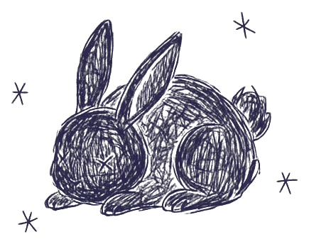
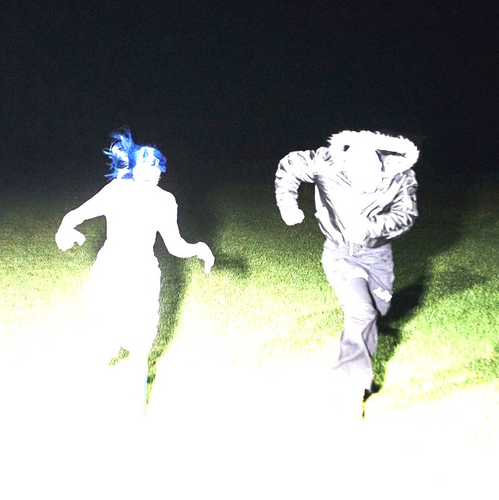
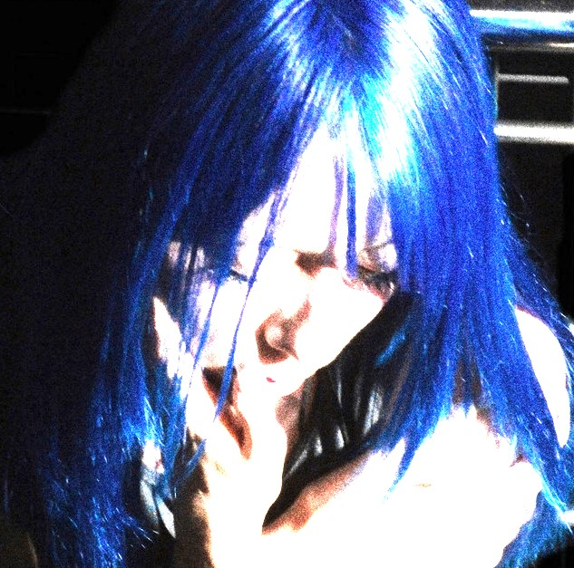
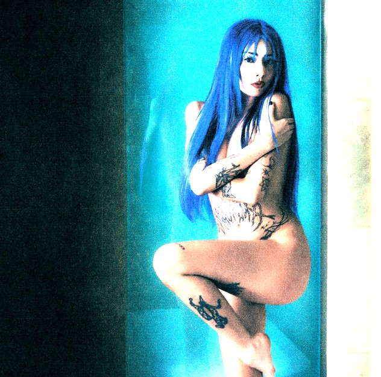

← volver
KUINA
música
✶
Músika


lo último · no seai fome
kontando el tiempo
dale play altiro ♡
▶
0:00 / 0:00
ándate a Spotify ↗
— todo lo que he hecho, no te hagai el sordo —
kontando el tiempo
Sencillo · 2026

irrekonocible
Sencillo · 2026

Buenos Valores, Malos Modales
Álbum debut · 2025
solo estoy jugando
Mixtape · 2024